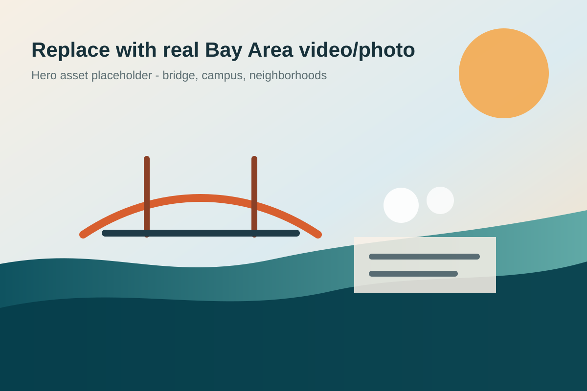

Berkeley
Plant first with campus ministry and a local church foundation.
Planting the Bay is a fundraising, storytelling, and vision-casting initiative to launch campus ministry and a local church in Berkeley, then expand across the San Francisco Bay Area.
MVP copy and visuals are structured for the two highest-priority flows: following the story and taking action through giving or involvement.

At-a-glance vision
The homepage now explains where this starts, where it goes, and why it matters without requiring visitors to click around first.
Plant first with campus ministry and a local church foundation.
Extend pop-up services and outreach into the city.
Build relational bridges through families, campuses, and neighborhoods.
Prepare for a larger South Bay planting movement.
Activate hosts, volunteers, and serving pathways.
Expand capacity as baptisms and relocations grow.
Fundraising momentum
This progress meter is ready to update manually or connect to live giving totals later.
Replace the placeholder with confirmed raised totals before publishing.
The site now separates emotional story from donor-confidence content: stats, maps, budget transparency, and clear pathways for people who want to help.
Choose your pathway
Recurring giving is emphasized with impact tiers and a transparent budget story.
Start givingFor staff couples, interns, and families considering relocation to the Bay.
Explore rolesLocal supporters can volunteer, host, pray, or connect with upcoming pop-up services.
Join in prayer
Featured story
Create a clear emotional through-line around Stuart and Ashley, their calling, the SF Bay Fellowship partnership, and the first Berkeley planting step.
Updates & stories
Share the first field notes, photos, and short video updates here.
Make the non-financial on-ramp easy and meaningful.
Use short transparent posts to increase donor confidence.
Supporter list
Capture email addresses for prayer, donor updates, and campaign momentum.